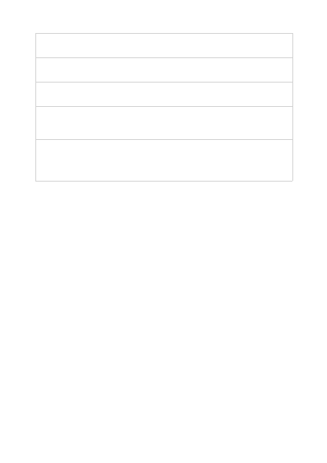

The following hyperparameters are available:
Parameter
name
Description
Number
of epochs
The number of epochs to train the model for. An epoch refers to one full cycle
through the training dataset.
Batch size
The batch size to use for training. The batch size is the number of training examples
used to train a single forward and backward pass.
Learning
rate
multiplier
The learning rate multiplier to use for training. The fine-tuning learning rate is the
original learning rate used for pre-training, multiplied by this value.
Prompt
loss
weight
The weight to use for loss on the prompt tokens. This value controls how much the
model tries to learn to generate the prompt (as compared to the completion, which
always has a weight of 1.0.) Increasing this value can add a stabilizing effect to
training when completions are short.
For more information about these hyperparameters, see the Create a Fine tune job
section of the REST API documentation.
After you've chosen either default or advanced options, select Next to review your
choices and train your fine-tuned model.
The Review and train pane of the wizard displays information about the choices you've
made in the Create customized model wizard for your fine-tuned model, as shown in
the following picture.
Review your choices and train your model